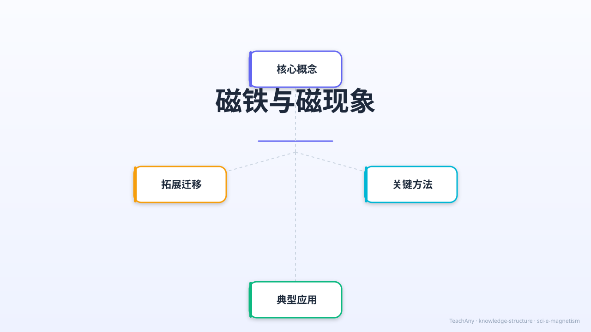

探索磁铁的神奇力量：为什么磁铁能吸铁？N极S极有什么秘密？指南针怎么工作？

磁铁是生活中常见的物品。我们知道磁铁能"吸"住某些东西，冰箱上的贴纸就是用磁铁固定的，工厂里用大磁铁搬运废铁。每个人都见过磁铁。
但是——为什么磁铁能吸铁钉，却不能吸铜钱？为什么两块磁铁有时会互相吸引，有时又互相推开？把磁铁掰成两半，新断口会变成什么极？磁铁藏着多少我们不知道的秘密？
因此，今天我们要探索磁铁的三大秘密：①什么能被磁铁吸引；②N极S极的相互作用；③磁场与磁力线是什么。学完后，你将能解释身边所有磁铁现象！
北极（North Pole）
磁铁红色端，朝向地球北方
指南针红针就是N极
南极（South Pole）
磁铁蓝色端，朝向地球南方
与N极总是成对出现
磁铁周围存在一种特殊的空间，能对铁磁体产生作用力。这个空间叫磁场，虽然看不见摸不着，但确实存在。
磁力线从N极出发，在外部弯弧流向S极，在内部从S极返回N极，形成闭合曲线。越密集的地方磁场越强。
把铁粉撒在纸上，将磁铁放在纸下，铁粉会沿磁力线排列，让我们直接"看见"磁场的形状！
只有铁（Fe）、镍（Ni）、钴（Co）这三种金属能被磁铁吸引，统称"铁磁性材料"。铜、铝、金、银等金属不能被磁铁吸引。
指南针的磁针是一块条形磁铁。地球本身有强大的地磁场，地磁北极（靠近地理北极附近）会吸引指南针的N极，使其始终指向北方。
地球的地磁场是由地核中熔融铁合金的流动产生的。地磁极与地理极相近但不完全重合，磁偏角在不同地方略有差异。
冰箱门上有一圈软磁铁，能吸住金属门框，防止冷气外泄，节约能源。
电流通过线圈产生磁场，与永久磁铁配合驱动纸盆振动，发出声音。
利用同极相斥，使列车悬浮在轨道上，消除摩擦力，可高速行驶。
工厂用大型电磁铁从垃圾中分离出铁制品，高效实现废铁回收利用。
银行卡背面的黑色磁条中，铁磁微粒的排列方向记录着账户信息。
医院的MRI机器使用超强磁场对人体进行成像，帮助医生诊断疾病。
磁铁是一种能够吸引铁、镍、钴等金属的物体。它具有两个磁极，分别是北极（N极）和南极（S极）。同极相斥，异极相吸是磁铁的基本性质。例如，将两块磁铁的N极靠近，它们会互相推开；而将一块磁铁的N极靠近另一块的S极，它们会互相吸引。生活中常见的磁铁应用包括冰箱贴、磁力扣等。磁铁的磁性可以通过实验验证，比如用磁铁吸引回形针或铁钉。磁铁的磁性不仅存在于表面，而是分布在整个磁铁中。
磁场是磁铁周围存在的一种看不见的力场，它能够对其他磁性物体产生作用力。磁场可以用磁感线来表示，磁感线从N极出发，回到S极。例如，将铁屑撒在磁铁周围的纸上，铁屑会排列成一定的图案，这就是磁场的可视化表现。磁场的强弱与磁铁的大小和形状有关，条形磁铁的磁场比马蹄形磁铁更集中。磁场不仅存在于磁铁周围，地球本身也是一个巨大的磁体，拥有地磁场，指南针就是利用地磁场来指示方向的。
磁铁可以分为天然磁铁和人造磁铁。天然磁铁如磁铁矿（Fe3O4），而人造磁铁包括铁氧体磁铁、钕磁铁等。不同种类的磁铁磁性强度不同，钕磁铁的磁性最强。磁铁在生活中有广泛的应用，比如扬声器中的磁铁用于将电信号转化为声音，电动机中的磁铁用于产生旋转力。磁铁还用于医疗领域，如核磁共振成像（MRI）。此外，磁铁在工业生产中用于分离金属杂质，提高产品质量。
磁化是指非磁性物体在磁场作用下获得磁性的过程。例如，用磁铁反复摩擦铁钉，铁钉会变成临时磁铁，能够吸引其他铁质物体。磁化的原理是物体内部的微小磁畴在磁场作用下排列一致，从而表现出磁性。磁化可以是暂时的，也可以是永久的。钢制物品容易被永久磁化，而铁制物品通常是暂时磁化。磁化现象在日常生活中常见，比如用磁铁吸起散落的针或别针。
磁屏蔽是指通过某些材料阻挡或减弱磁场的影响。例如，用铁盒包裹磁铁，可以减弱外部磁场对盒内物体的影响。磁屏蔽的原理是屏蔽材料（如铁、镍）能够吸引并重新分布磁感线，从而减少磁场对屏蔽区域的影响。磁隔离在电子设备中尤为重要，比如电脑硬盘和信用卡需要避免强磁场干扰。磁屏蔽材料的选择和厚度会影响屏蔽效果，通常高磁导率的材料效果更好。
电磁铁是通过电流产生磁场的装置，由线圈和铁芯组成。当电流通过线圈时，铁芯会被磁化，形成强大的磁场。切断电流后，磁场消失。电磁铁的磁性可以通过调节电流大小和线圈匝数来控制。电磁铁广泛应用于起重机、门铃、继电器等设备中。例如，废品回收站用电磁铁吸起废铁，门铃中的电磁铁推动锤子敲击铃铛。电磁铁的优势在于磁性可控制，适用于需要频繁开关磁场的场合。
地磁场是地球内部的液态外核运动产生的磁场，类似于一个巨大的条形磁铁。地磁北极靠近地理南极，地磁南极靠近地理北极。指南针的小磁针在地磁场作用下指向地磁北极，从而帮助人们辨别方向。地磁场不仅用于导航，还保护地球免受太阳风等宇宙射线的侵害。地磁场会随时间缓慢变化，甚至发生磁极反转。研究地磁场有助于理解地球内部结构和太阳活动对地球的影响。
磁现象在自然界中有许多奇妙的应用。例如，某些鸟类（如鸽子）和海洋生物（如海龟）利用地磁场进行长距离迁徙。科学家认为这些生物体内含有微小的磁性颗粒，帮助它们感知磁场。此外，磁现象还用于研究古地磁学，通过岩石中的磁性记录了解地球历史。磁现象在医学上也有应用，如磁疗和靶向药物输送。磁现象的研究不仅丰富了科学知识，还为技术创新提供了灵感。
1. 你知道磁铁能吸引哪些金属吗？2. 你见过哪些使用磁铁的物品？3. 你知道指南针为什么能指向北方吗？
1. 磁铁的两个磁极分别叫什么？2. 如何用简单的方法验证磁铁的存在？3. 电磁铁和永久磁铁有什么区别？
错因：学生常误以为所有金属都能被磁铁吸引。误区：实际上只有铁、镍、钴等少数金属能被磁铁吸引。诊断：通过实验对比不同金属的磁性反应，帮助学生明确磁铁吸引的对象。
探究：设计一个实验，比较不同形状磁铁（条形、环形、马蹄形）的磁场分布，用铁屑可视化并分析结果。
先独立作答，再点选项查看对错与错因。
下列哪种物品能被磁铁吸引？
磁铁的两端有什么特性？
下列哪种材料最适合制作磁铁？
磁铁能吸引____材料的物品。
答案：铁磁性
磁铁主要吸引铁磁性材料，如铁、镍等。
磁铁的两端分别称为____和____。
答案：南极, 北极
磁铁的两端分别称为南极和北极，特性不同。
下列哪种说法正确描述了磁铁的特性？
设计一个实验，探究磁铁对不同材料的吸引力。